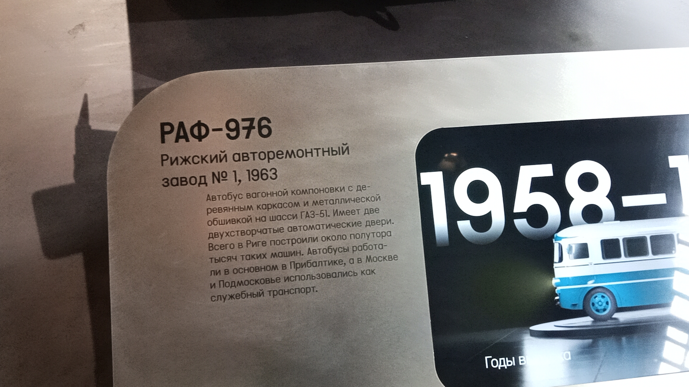
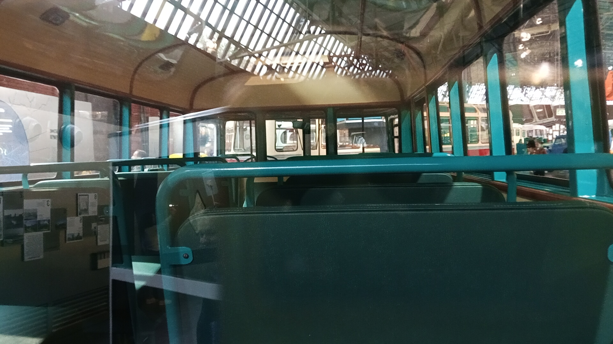

РАФ-976 № 5303 КАФ
Перед вами музейный экспонат — автобус малого класса РАФ-976 с госномером 5303 КАФ, выпущенный в 1963 году на Рижском авторемонтном заводе №1.
До попадания в коллекцию Музея Транспорта Москвы эта машина работала в Тверской области (ТОО «Гитас»). В Москву была передана в 2007 году.
Общая информация
| Параметр | Значение |
|---|---|
| Город | Москва 🇷🇺 |
| Транспортная компания | Музей Транспорта Москвы |
| Модель | РАФ-976 |
| Госномер | 5303 КАФ |
| Год выпуска | 1963 |
| Поступил в музей | 2007 |
| Текущее состояние | Памятник / Музейный |
Технические характеристики
Основные параметры
Длина: 6,696 м
Ширина: 2,45 м
Высота: 2,7 м
Сухая масса: 4040 кг
Максимальная скорость: 70 км/ч
Расход топлива: около 30 л/100 км
Силовая установка
Двигатель: ГАЗ-51, бензиновый
Цилиндры: 6, рядный
Мощность: 70 л.с.
Объём: 3485 см³
КПП: 4-ступенчатая механическая
Расположение: переднее, в кабине рядом с водителем
История экспоната
Постройка
Автобус сошёл с конвейера Рижского авторемонтного завода №1.
Работа в Твери
Эксплуатировался в Тверской области в ТОО «Гитас» (заказные и частные перевозки).
Передача в музей
Автобус передан в музейную технику (ММТ и ЦИКТ АНО «МДТО») в Москве.
Трамвайный ремонтный завод (ТРЗ)
Автобус находился на территории ТРЗ, где проходил восстановление.
Выставка на ВВЦ
Экспонировался у Главного входа ВВЦ.
Парад к 90-летию
Принял участие в Параде в честь 90-летия Московского автобуса на Ленинградском проспекте.
Выставка на Чистопрудном бульваре
Участие в выставке ретротехники.
Филиал «Филёвский»
Сфотографирован на площадке Филёвского автобусно-троллейбусного парка.
Проспект Академика Сахарова
Экспонат был представлен на выставке в центре Москвы.
Музей Транспорта Москвы
Автобус теперь стал частью экспозиции музея.
Фотогалерея

📌 Музей Транспорта Москвы.
Общий вид экспоната.

📌 Музей Транспорта Москвы.
Музейная информация.

📌 Музей Транспорта Москвы.
Салон автобуса.
Нажмите на фото для увеличения
«Этот автобус прошел долгий путь от работы на заказных маршрутах в Твери до статуса музейного экспоната в Москве. Теперь он — один из немногих сохранившихся свидетелей эпохи».